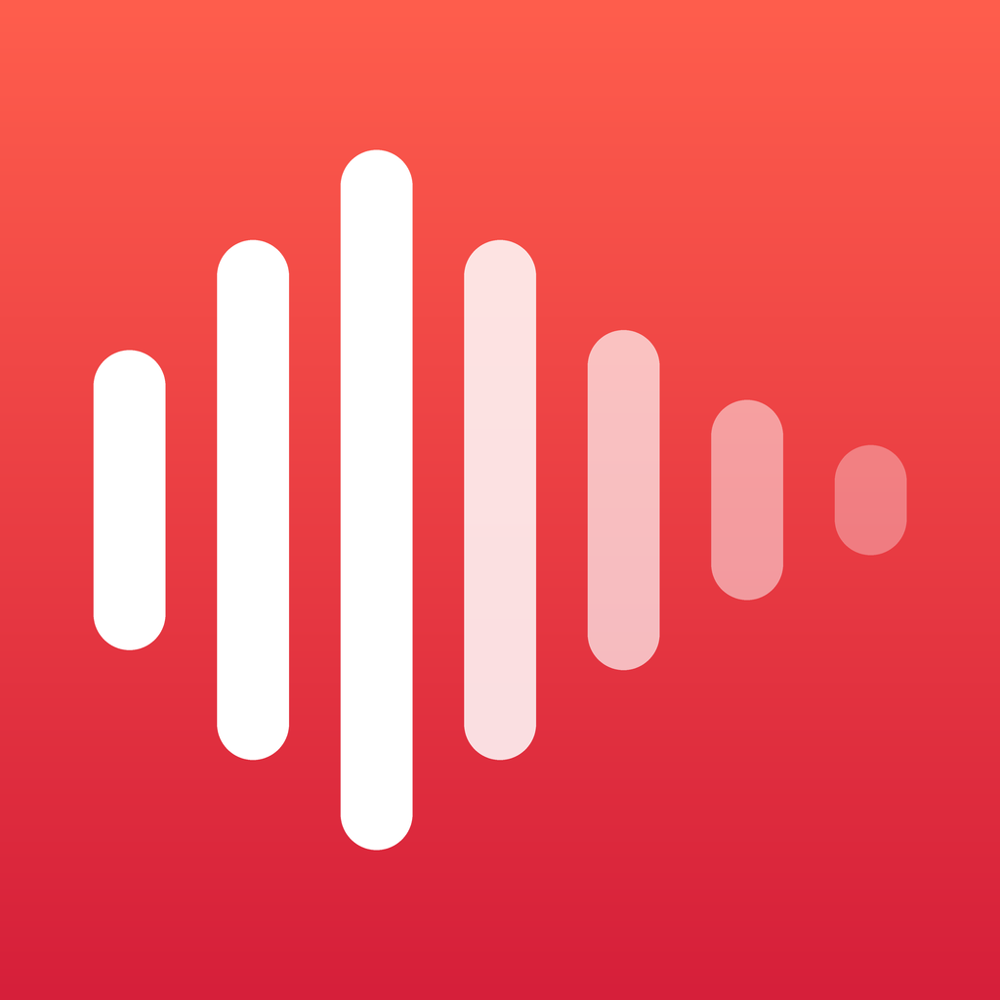

Never lose a recording. Never share one. Everything stays on your iPhone.
Email rushcentro@gmail.com. We answer within 24 hours.
Where are my recordings? On your iPhone, in Files › On My iPhone › Hush › Recordings. Hush has no servers.
The app closed while recording. Open Hush again: the recording is restored and marked "Recovered".
I deleted a recording. Settings › Recently Deleted keeps it for 30 days.
Transcription is empty or wrong. Check the language: Settings › Transcription language, or the Language picker on the recording.
Cancel a subscription. iPhone Settings › your name › Subscriptions › Hush.